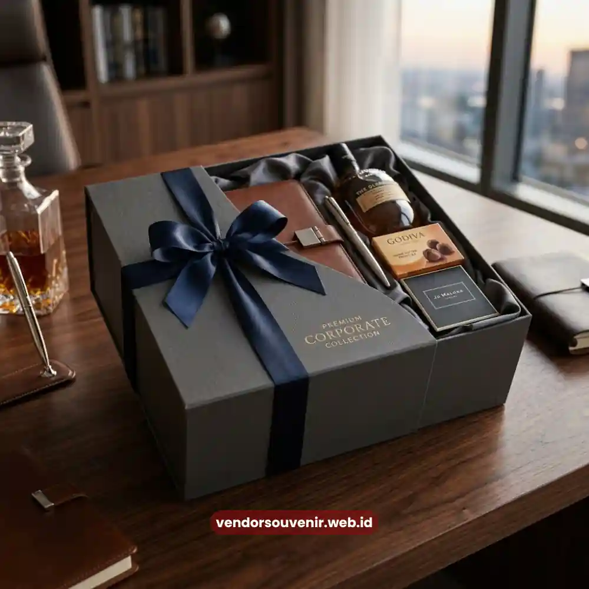

Daftar Isi
Hampers kantor eksklusif adalah paket hadiah korporat bernilai tinggi yang dirancang khusus untuk mempererat hubungan dengan klien, mitra, atau relasi bisnis penting.
Berbeda dari parcel pada umumnya, hampers ini berisi kombinasi produk premium seperti makanan gourmet, aksesori kerja, hingga perlengkapan self-care yang dikemas dalam desain elegan bernuansa profesional.
Memilih hampers kantor eksklusif yang tepat akan memperkuat citra perusahaan sekaligus menunjukkan apresiasi yang tulus kepada penerima.
- Hampers kantor eksklusif mengutamakan kualitas produk dan kemasan premium untuk membangun kesan profesional di mata klien.
- Paling sering digunakan pada momen akhir tahun, hari jadi perusahaan, atau sebagai bentuk apresiasi kerja sama bisnis.
- Tersedia berbagai kategori, mulai dari hampers makanan, hampers perlengkapan kerja, hingga hampers kombinasi lifestyle.
- Personalisasi logo dan kartu ucapan perusahaan menjadi nilai tambah yang meningkatkan efek branding.
- Vendor Souvenir menghadirkan koleksi hampers kantor eksklusif siap kirim dengan harga promo untuk pemesanan hari ini.
Apa Itu Hampers Kantor Eksklusif?
Hampers kantor eksklusif adalah bingkisan korporat yang disusun dengan kurasi khusus.
Hadiah ini menekankan kualitas isi dan tampilan kemasan yang mencerminkan level profesionalisme pemberinya.
Konsep "eksklusif" di sini merujuk pada pemilihan produk yang tidak pasaran, kemasan yang dirancang detail, serta sentuhan personalisasi seperti logo perusahaan atau kartu ucapan resmi.
Berbeda dengan parcel Lebaran atau Natal yang cenderung generik, hampers kantor eksklusif biasanya disesuaikan dengan identitas brand perusahaan pengirim.
Warna kemasan, jenis pita, hingga pemilihan produk di dalamnya sering kali mengikuti palet warna korporat.
Pendekatan ini membuat penerima langsung mengasosiasikan hadiah tersebut dengan citra perusahaan yang memberikannya, bukan sekadar hadiah musiman biasa.
Di lingkungan bisnis, hampers semacam ini juga berfungsi sebagai alat komunikasi non-verbal.
Sebuah hampers yang dikemas rapi dengan isi berkualitas menyampaikan pesan bahwa perusahaan menghargai hubungan jangka panjang, bukan sekadar transaksi sesaat.

Set Hampers Kantor Korporat
Mengapa Perusahaan Perlu Memberikan Hampers Kantor Eksklusif kepada Klien?
Memberikan hampers kantor eksklusif kepada klien membantu memperkuat loyalitas.
Tindakan ini juga mempercepat proses membangun kepercayaan dan menciptakan kesan positif yang bertahan lama pada relasi bisnis.
Di tengah persaingan usaha yang ketat, sentuhan personal semacam ini kerap menjadi pembeda antara perusahaan yang sekadar transaksional dengan perusahaan yang benar-benar peduli pada hubungan jangka panjang.
Selain sebagai bentuk apresiasi, hampers eksklusif juga berperan sebagai media branding yang halus.
Ketika klien membuka kotak hampers dan mendapati desain rapi berlogo perusahaan, secara tidak langsung brand awareness ikut terbangun.
Momentum ini sering dimanfaatkan pelaku bisnis untuk memperkenalkan lini produk baru, merayakan pencapaian bersama, atau sekadar menjaga silaturahmi profesional agar hubungan kerja sama tetap hangat sepanjang tahun.
Banyak perusahaan juga melaporkan bahwa pemberian hampers berkualitas secara konsisten turut memengaruhi keputusan klien untuk memperpanjang kontrak kerja sama, karena hadiah tersebut dianggap sebagai bentuk komitmen dan keseriusan dalam menjaga hubungan bisnis.
Jenis-Jenis Hampers Kantor Eksklusif yang Populer di Kalangan Korporat
Koleksi hampers kantor eksklusif umumnya terbagi ke dalam beberapa kategori sesuai kebutuhan dan target penerima.
Berikut ragam yang paling banyak dipilih perusahaan.
Hampers Makanan dan Minuman Premium
Kategori ini berisi kombinasi camilan gourmet, cokelat premium, kopi atau teh pilihan, hingga makanan ringan sehat yang dikemas mewah.
Cocok untuk klien yang lebih menyukai hadiah yang bisa langsung dinikmati bersama keluarga atau rekan kerja di kantor.
Hampers Perlengkapan Kerja Eksklusif
Berisi alat tulis premium, tumbler atau mug berkualitas, organizer meja, hingga aksesori kerja lain yang fungsional.
Jenis ini paling relevan untuk klien profesional karena manfaatnya bisa dirasakan setiap hari, sehingga logo perusahaan pengirim juga lebih sering terlihat.
Hampers Kombinasi Lifestyle dan Self-Care
Menggabungkan produk relaksasi seperti lilin aromaterapi, perawatan tangan, hingga aksesori lifestyle ringan.
Cocok diberikan pada momen apresiasi khusus, misalnya penutupan proyek besar atau ulang tahun kerja sama bisnis.
Hampers Bertema Custom Branding
Seluruh isi dan kemasan dirancang mengikuti identitas visual perusahaan, mulai dari warna, logo, hingga pesan khusus pada kartu ucapan.
Jenis ini paling banyak dipilih perusahaan yang ingin memperkuat brand recall di mata klien maupun mitra strategis.
Kapan Waktu Tepat Memberikan Hampers Kantor Eksklusif?
Waktu paling ideal memberikan hampers kantor eksklusif adalah pada momen bernilai simbolis tinggi, seperti pergantian tahun, hari jadi perusahaan, atau penutupan kerja sama besar.
Pada momen-momen ini, hadiah lebih mudah diingat karena disertai konteks emosional yang kuat.
Selain momen tahunan seperti akhir tahun dan hari raya, banyak perusahaan juga memberikan hampers eksklusif saat menyambut klien baru sebagai bentuk perkenalan yang berkesan.
Pemberian ini juga sering dijadikan ucapan terima kasih setelah menyelesaikan proyek kerja sama dalam skala besar.
Pemberian hampers di momen tak terduga seperti ini justru sering meninggalkan kesan lebih mendalam dibanding hadiah rutin tahunan, karena terasa lebih personal dan tulus.
Apa Saja Faktor yang Membuat Hampers Kantor Terlihat Eksklusif?
Kesan eksklusif pada sebuah hampers terbentuk dari kombinasi kualitas isi, detail kemasan, dan sentuhan personalisasi yang konsisten dengan identitas pemberi.
Kualitas produk di dalamnya harus terasa premium, bukan sekadar barang massal dengan harga murah.
Kemasan juga memegang peran besar.
Penggunaan kotak dengan material tebal, pita satin, hingga label custom logo memberi kesan bahwa hampers tersebut dipersiapkan secara khusus, bukan produk instan.
Sentuhan terakhir seperti kartu ucapan bertulisan tangan atau pesan personal turut menambah nilai emosional yang membuat penerima merasa benar-benar dihargai.

Solusi Vendor Souvenir
Kesalahan Umum saat Memilih Hampers Kantor untuk Klien
Beberapa kesalahan yang kerap terjadi adalah memilih isi hampers yang terlalu umum sehingga terkesan asal beli.
Selain itu, mengabaikan kualitas kemasan, serta tidak menyesuaikan isi dengan profil dan preferensi klien penerima juga sering terjadi.
Kesalahan lain yang sering luput adalah tidak mempertimbangkan keseimbangan antara budget dan kualitas, sehingga hasil akhirnya justru terlihat murahan meski biaya yang dikeluarkan sebenarnya tidak sedikit.
Personalisasi yang minim juga menjadi kelemahan umum.
Hampers tanpa sentuhan branding atau pesan personal cenderung mudah dilupakan.
Padahal tujuan utama pemberian hampers adalah membangun kesan yang membekas di ingatan klien.
Hampers kantor eksklusif bukan sekadar hadiah, melainkan investasi dalam menjaga dan memperkuat hubungan bisnis jangka panjang.
Pemilihan isi yang berkualitas, kemasan yang detail, serta momen pemberian yang tepat akan menentukan seberapa besar kesan yang tertinggal di benak klien Anda.
Butuh Bantuan Merancang Corporate Hampers?
Tim ahli kami siap membantu Anda menyusun paket hadiah eksklusif yang menarik.
Pilihan barang akan disesuaikan dengan ketersediaan budget dan kebutuhan Anda.
Seluruh desain kemasan akan kami selaraskan dengan identitas visual perusahaan Anda.
Dapatkan penawaran harga terbaik untuk pesanan massal!
FAQ Hampers Kantor Eksklusif
Apa perbedaan hampers kantor eksklusif dengan parcel biasa?
Hampers kantor eksklusif menekankan kurasi produk premium, kemasan detail, dan personalisasi branding, sementara parcel biasa umumnya berisi produk standar dengan kemasan yang lebih sederhana.
Berapa kisaran budget ideal untuk hampers kantor eksklusif?
Budget bervariasi tergantung isi dan tingkat personalisasi yang dipilih, sehingga sebaiknya disesuaikan dengan kebijakan anggaran corporate gifting masing-masing perusahaan.
Apakah hampers kantor eksklusif bisa dikustomisasi dengan logo perusahaan?
Bisa. Personalisasi logo pada kemasan maupun kartu ucapan umumnya tersedia sebagai layanan tambahan untuk memperkuat identitas brand pengirim.
Kapan waktu terbaik memesan hampers kantor eksklusif dalam jumlah besar?
Sebaiknya pemesanan dilakukan jauh-jauh hari sebelum momen penting seperti akhir tahun, agar proses kurasi, personalisasi, dan pengiriman berjalan tanpa terburu-buru.
Apakah Vendor Souvenir melayani pengiriman hampers kantor eksklusif ke luar kota?
Vendor Souvenir melayani pengiriman ke berbagai wilayah sesuai kebutuhan perusahaan, dengan pengemasan yang tetap menjaga kualitas produk selama perjalanan.
Maroon Souvenir
Partner Corporate Gift terpercaya di Indonesia. Berpengalaman melayani ratusan perusahaan sejak 2018.
Lihat Portofolio Kami